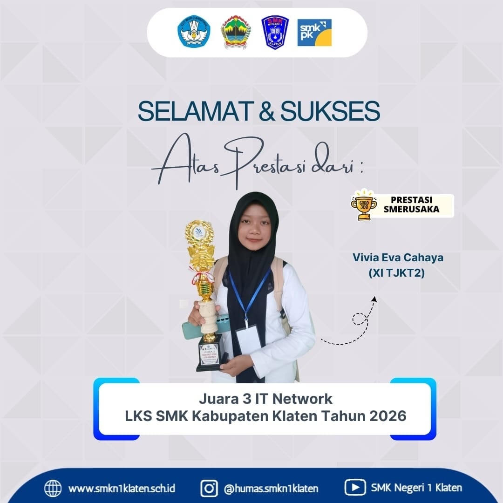
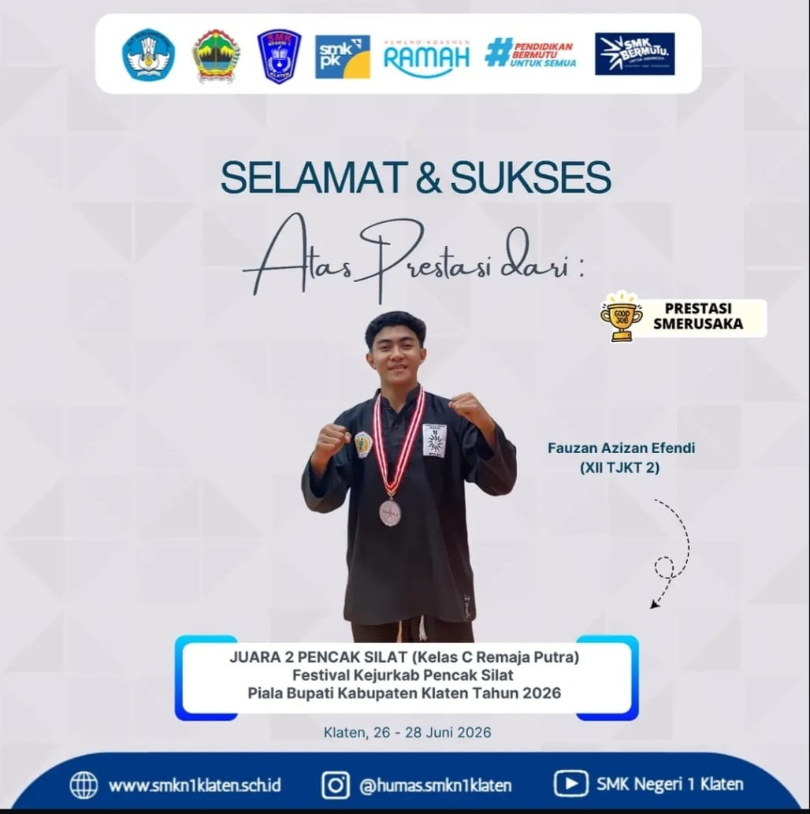
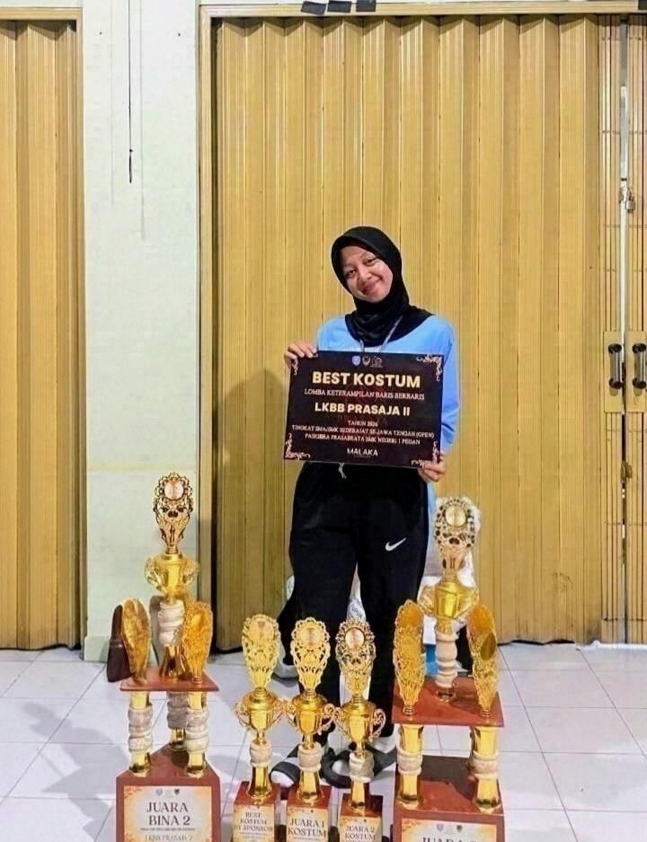
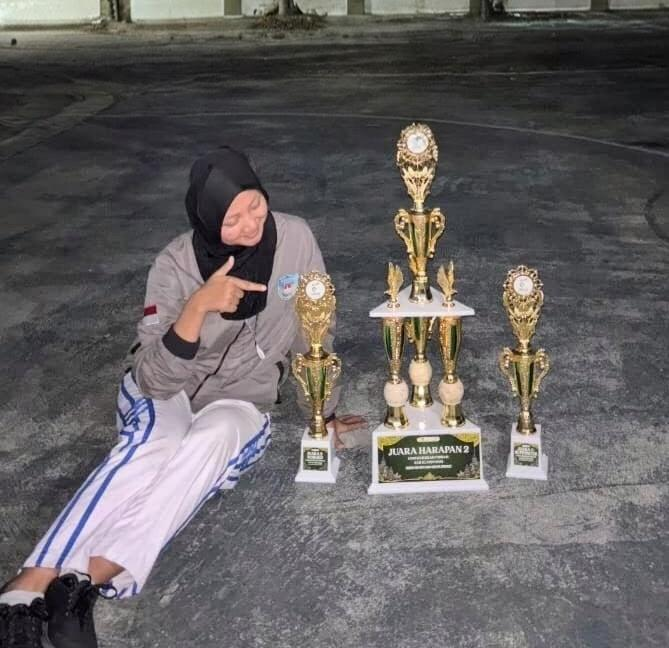
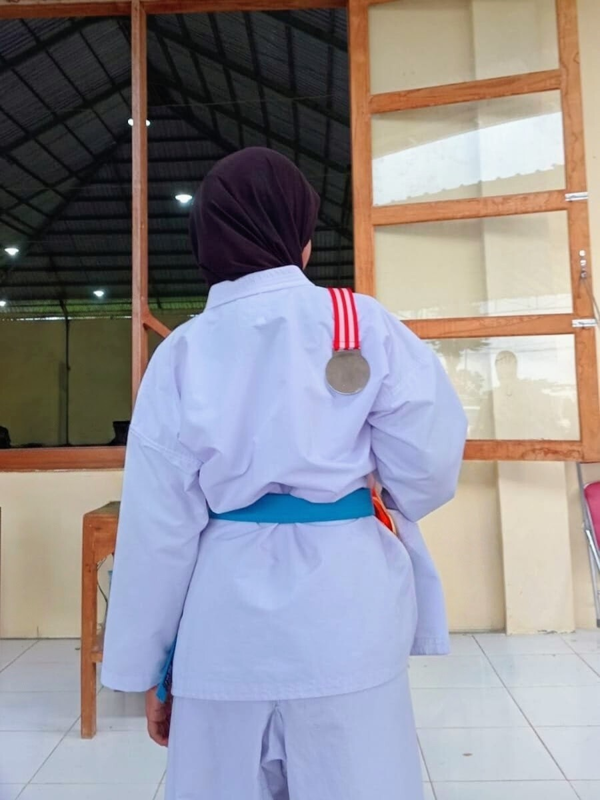
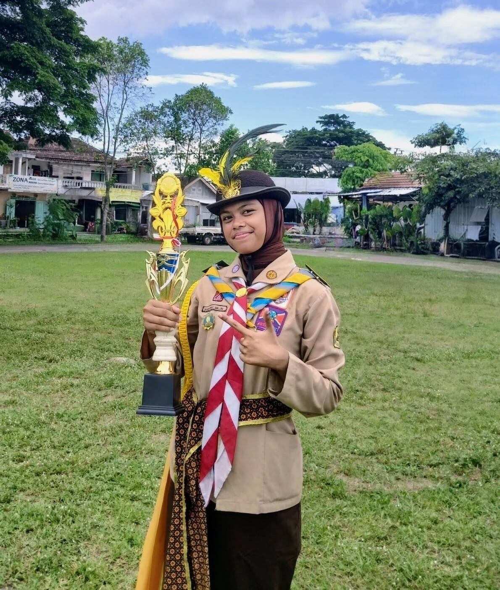
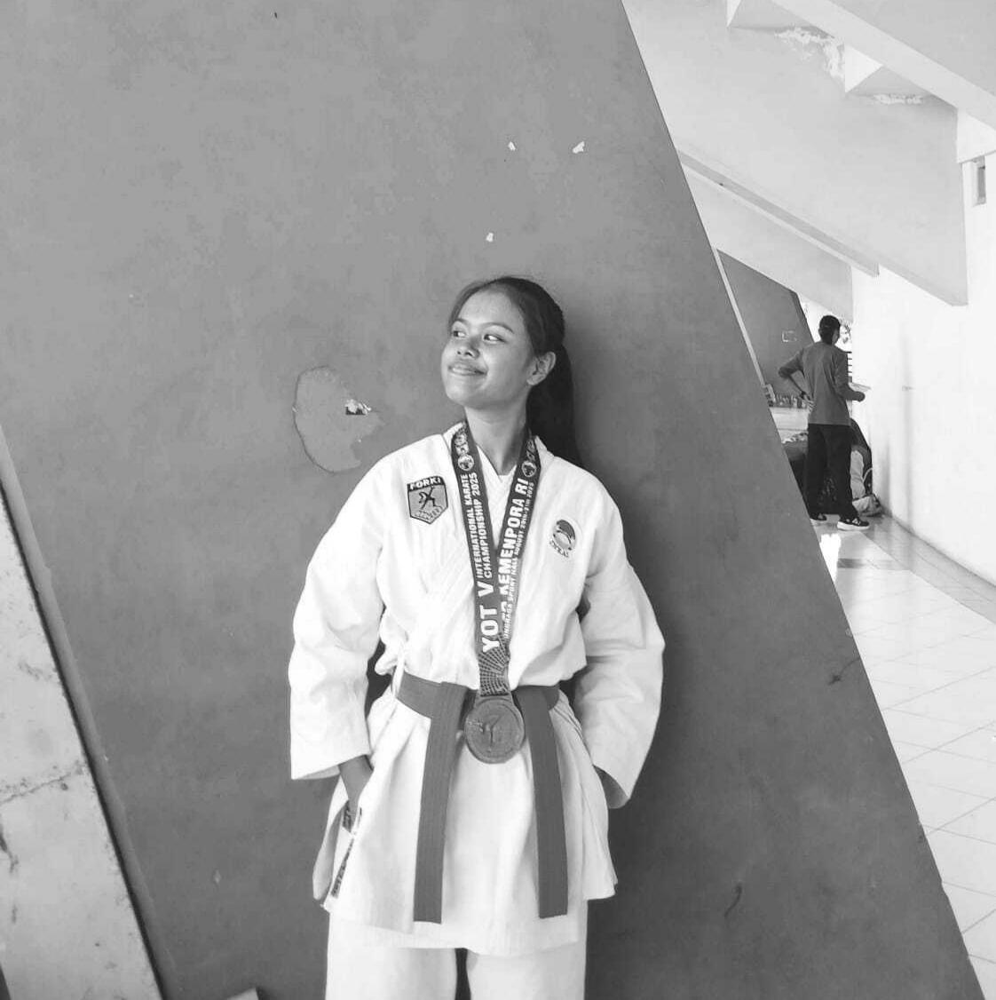
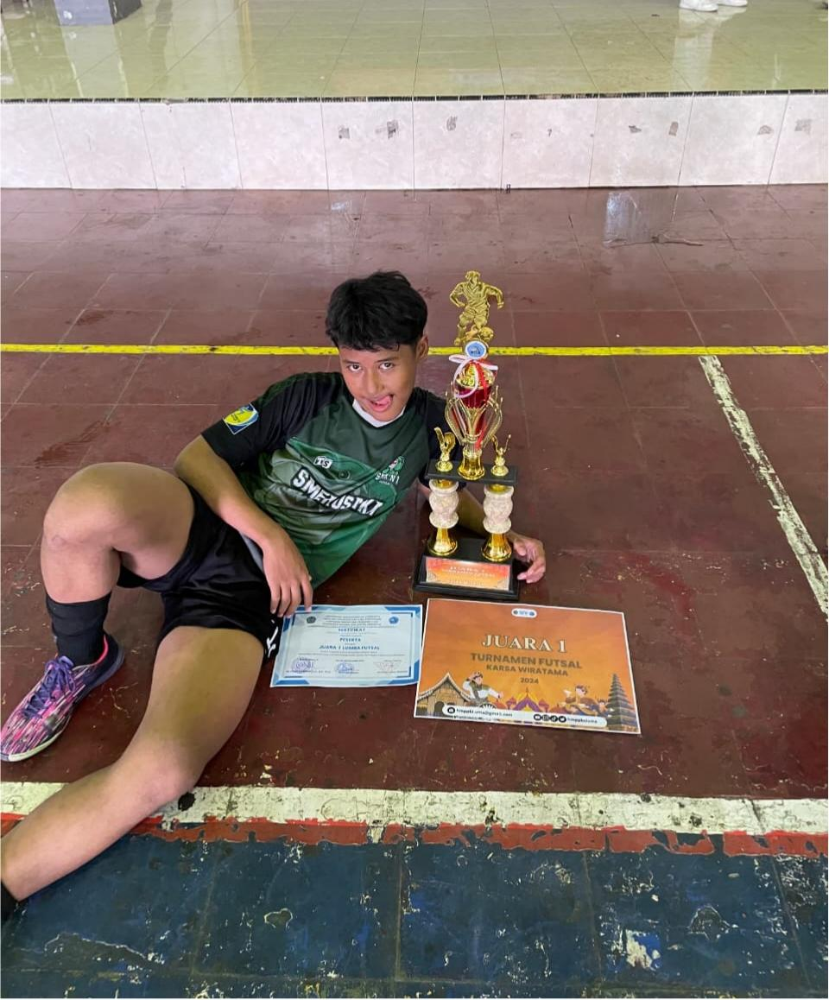

Setiap pencapaian menjadi bagian yang membanggakan bagi XII TJKT 2. Halaman ini berisi berbagai prestasi yang berhasil diraih oleh siswa-siswi kami dalam berbagai bidang. Berbagai pencapaian tersebut menjadi bukti semangat dan usaha untuk terus berkembang.

Mengikuti kompetisi LKS bidang IT Network System Administrator yang berfokus pada perancangan, konfigurasi, dan pengelolaan infrastruktur jaringan komputer serta server.

Meraih prestasi dalam kompetisi pencak silat pada ajang Piala Bupati Klaten 2026. Kompetisi ini menampilkan kategori tanding dan seni dalam olahraga bela diri tradisional.

Pada ajang LKBB PRASAJA II, tim berhasil meraih Juara Bina 2, Juara 3 Danton, Juara 1 Kostum, Juara 2 Kostum Terpopuler, dan Best Kostum by Sponsor. Prestasi ini menjadi bukti kerja sama tim, kemampuan kepemimpinan, serta kreativitas dalam menampilkan kostum yang rapi, menarik, dan berkarakter.

Pada ajang LOBB Kerjurcab Klaten, tim berhasil meraih Juara Harapan 2, Best Suporter 3, dan Best Sosmed 3. Prestasi ini menunjukkan semangat juang, kekompakan tim, serta dukungan suporter dan kreativitas dalam publikasi kegiatan di media sosial.

Pada Kejuaraan Karate Se-Kabupaten Klaten "INKAI Cup VI Tahun 2024", berhasil meraih Juara 2 Kata Beregu Kadet Putri. Prestasi ini menunjukkan kemampuan teknik, kekompakan tim, serta disiplin dan kerja sama yang baik dalam cabang olahraga karate.

Pada kegiatan Lintas Alam Padma Birawa, berhasil meraih Juara 3 Lomba Pionering Putri. Prestasi ini menunjukkan kemampuan dalam membangun konstruksi pionering, kerja sama tim, kreativitas, serta ketelitian dalam menerapkan teknik kepramukaan.

Pada International Karate Championship Yogyakarta Open Tournament V 2025, berhasil meraih Juara 1 Kata Beregu Junior Putri. Prestasi ini menunjukkan penguasaan teknik, kekompakan tim, disiplin, dan dedikasi tinggi dalam cabang olahraga karate di tingkat internasional.

Pada Turnamen Futsal Karsawiratama HMP PBSI FKIP UMS Tingkat SMA/SMK/MA Sederajat yang diselenggarakan di Surakarta pada 9 November 2024, berhasil meraih Juara 1. Prestasi ini mencerminkan kerja sama tim, strategi permainan yang baik, serta semangat juang tinggi dalam meraih kemenangan.
Setiap prestasi merupakan hasil dari usaha dan semangat untuk mencoba. Pencapaian yang diraih menjadi motivasi bagi kami untuk terus berkembang. Semoga pencapaian tersebut dapat menjadi penyemangat untuk meraih hal-hal yang lebih baik lagi.